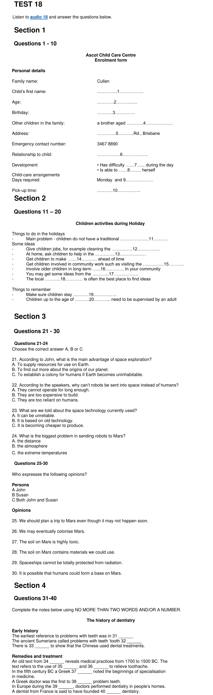

IELTS Listening: Test 18
Audio
This is the whole test, in one recording. In the exam you hear it once, so try a first listen without pausing.
Question book
Section 1
Questions 1–10
Ascot Child Care Centre
Enrolment form
Personal details
Family name: Cullen
Child’s first name: 1
Age: 2
Birthday: 3
Other children in the family: a brother aged 4
Address: 5 Rd., Brisbane
Emergency contact number: 3467 8890
Relationship to child: 6
Development • Has difficulty 7 during the day
Is able to 8 herself
Child-care arrangements
Days required: Monday and 9
Pick-up time: 10
Section 2
Questions 11–20
Children activities during Holiday
Things to do in the holidays
Main problem - children do not have a traditional 11
Some ideas
Give children jobs, for example cleaning the 12
At home, ask children to help in the 13
Get children to make 14 ahead of time
Get children involved in community work such as visiting the 15
Involve older children in long-term 16 In your community
You may get some ideas from the 17
The local 18 is often the best place to find ideas
Things to remember
Make sure children stay 19
Children up to the age of 20 need to be supervised by an adult
Section 3
Questions 21–24
Choose the correct answer A, B or C
21 According to John, what is the main advantage of space exploration?
- A To supply resources for use on Earth.
- B To find out more about the origins of our planet.
- C To establish a colony for humans if Earth becomes uninhabitable.
22 According to the speakers, why can’t robots be sent into space instead of humans?
- A They cannot operate for long enough.
- B They are too expensive to build.
- C They are too reliant on humans.
23 What are we told about the space technology currently used?
- A It can be unreliable.
- B It is based on old technology.
- C It is becoming cheaper to produce.
24 What is the biggest problem in sending robots to Mars?
- A the distance
- B the atmosphere
- C the extreme temperatures
Questions 25–30
Who expresses the following opinions?
Persons
- A John
- B Susan
- C Both John and Susan
Opinions
25 We should plan a trip to Mars even though it may not happen soon.
26 We may eventually colonise Mars.
27 The soil on Mars is highly toxic.
28 The soil on Mars contains materials we could use.
29 Spaceships cannot be totally protected from radiation.
30 It is possible that humans could form a base on Mars.
Section 4
Questions 31–40
Complete the notes below using NO MORE THAN TWO WORDS AND/OR A NUMBER.
The history of dentistry
Early history
The earliest reference to problems with teeth was in 31
The ancient Sumerians called problems with teeth ‘tooth 32
There is 33 to show that the Chinese used dental treatments.
Remedies and treatment
An old text from 34 reveals medical practices from 1700 to 1500 BC. The text refers to the use of 35 and 36 to relieve toothache.
In the fifth century BC a Greek 37 noted the beginnings of specialisation in medicine.
A Greek doctor was the first to 38 problem teeth.
In Europe during the 39 , doctors performed dentistry in people’s homes.
A dentist from France is said to have founded 40 dentistry.
Show the original book pages (picture)

Tap or click the pages to open them full size in a new tab.
Answer sheet
Marking ignores capital letters and accepts plurals and the usual alternative answers. If your answer is right but not accepted, press My answer is also right under it.
Tapescript
Check your answers first, then the tapescript opens here.